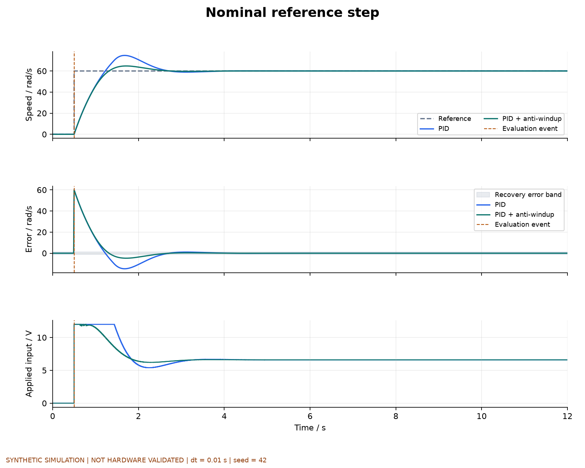
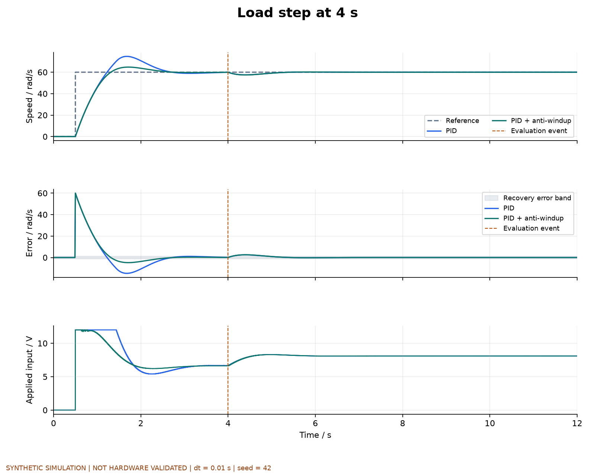
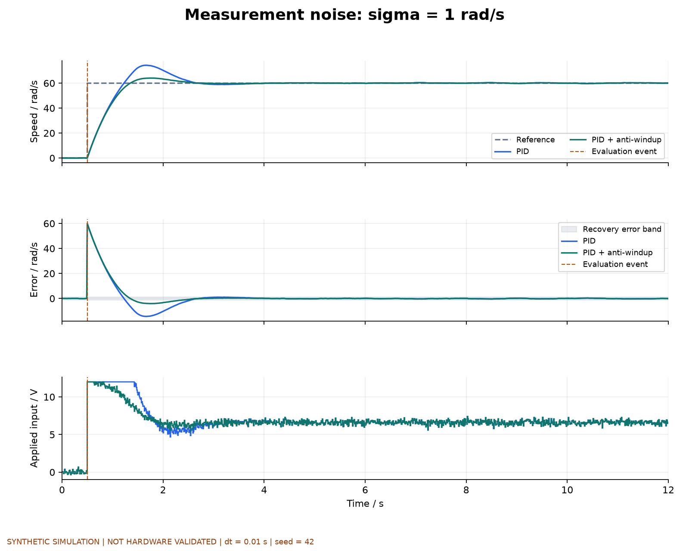
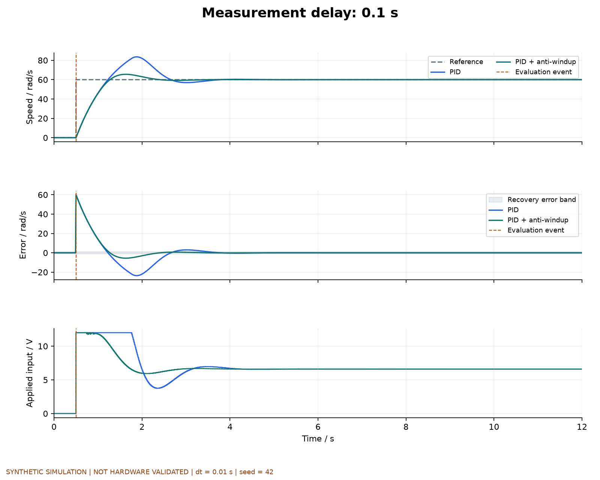
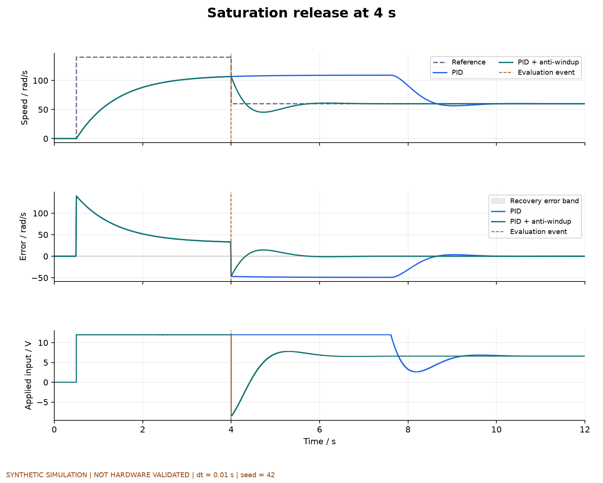
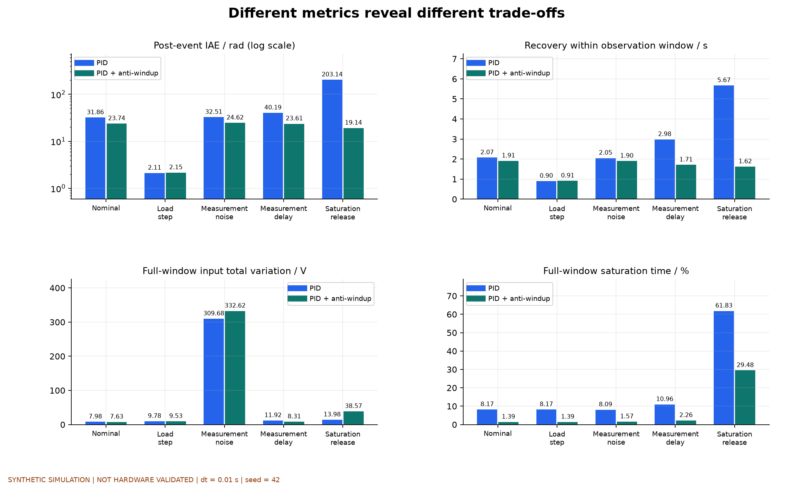
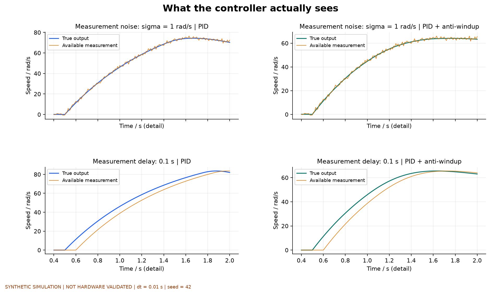
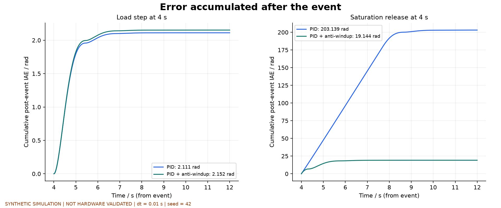
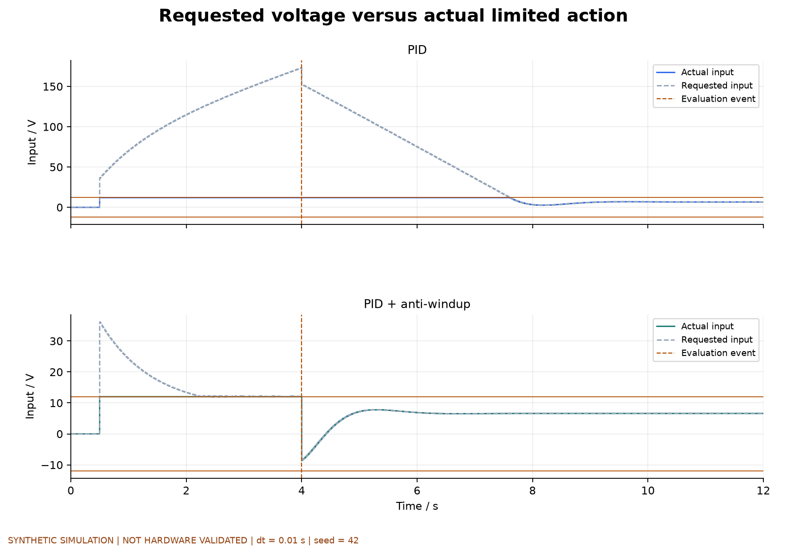

合成仿真，未经硬件验证。固定dt=0.01 s、seed=42；同场景两控制器使用相同噪声样本和增益。没有总分或普遍优劣结论。
五场景响应、误差与实际输入；指标总览；噪声/延迟细节；事件后累计误差；请求/实际输入。
正常参考阶跃：比较起步跟踪误差、误差带和限幅后的实际输入。

4秒加入0.15 N m负载。全程图保留起步过程，事件后指标另行比较。

两控制器使用同一噪声序列；电压抖动属于控制代价，不能把输入总变差当作能耗。

反馈延迟为0.1秒；控制器使用延迟测量，指标依据模型真实输出。

4秒参考从140回落至60 rad/s；140超过该假设模型的可达稳态转速，用于观察积分饱和后果。

五场景的事件后IAE、恢复时间、全评价窗口输入总变差和饱和比例。IAE面板使用对数轴；其余为线性轴。不同场景的事件含义不同，不把这些柱形合成总分。

放大0.4至2秒的反馈过程，上行为噪声，下行为延迟；左右分别为两种控制器。橙线是控制器可见的测量，不是真实状态。

积分从4秒事件起点累计，末值与对应事件后IAE逐项核对。两面板分别使用自己的纵轴范围；不能凭曲线视觉高度跨面板比较。

饱和回落场景的请求输入与实际输入，上下分别为普通和抗饱和PID。实际输入保持在±12 V；不同纵轴范围避免掩盖请求值的差异。
